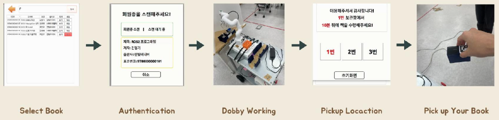
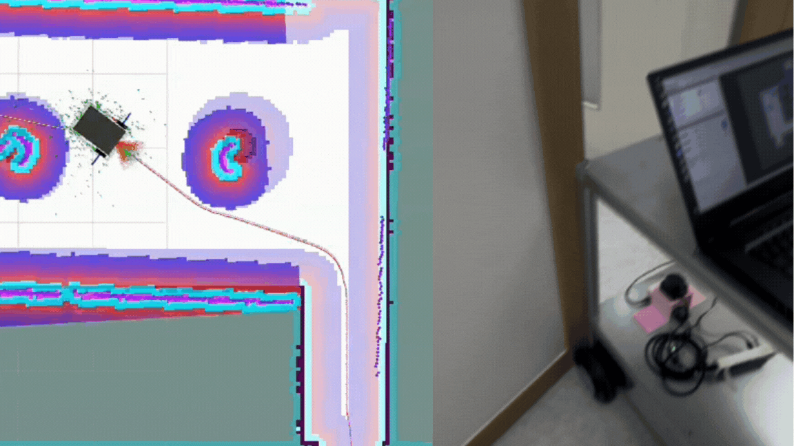
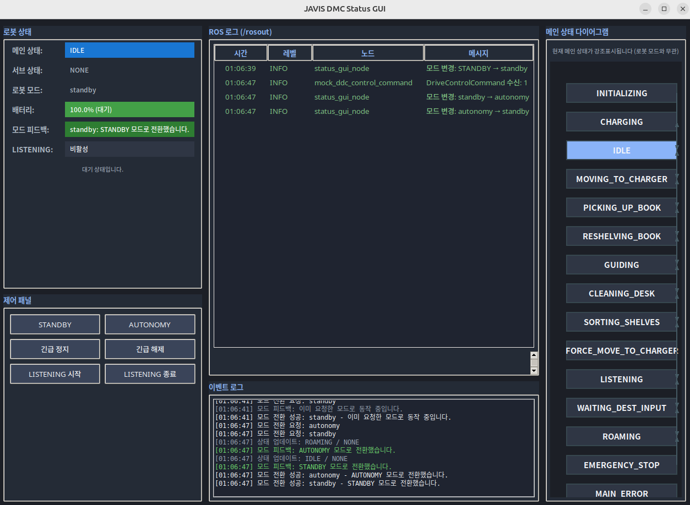
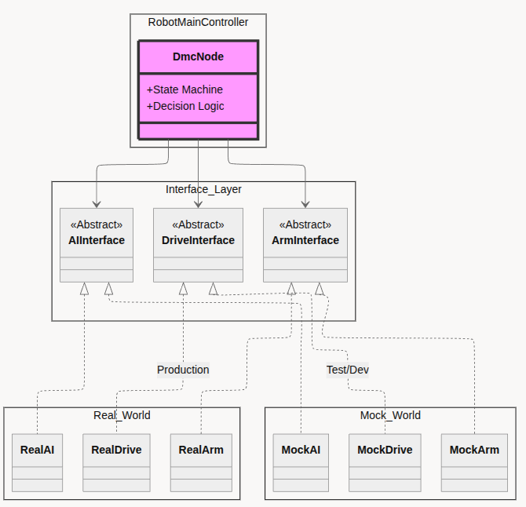
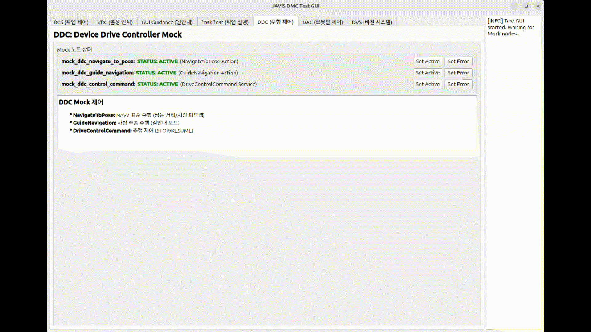

도서 픽업 서비스
사용자가 도서를 요청하면 중앙 시스템이 로봇의 상태와 배터리를 확인해 작업을 할당합니다. JAVIS는 목표 책장으로 이동하고, 카메라로 도서를 인식한 뒤 로봇팔로 픽업합니다.

픽업·반납 자율주행
Cartographer와 2D LiDAR로 도서관 지도를 작성하고, Nav2를 사용해 픽업·반납 위치까지 자율주행하도록 구성했습니다. Global Planner가 전체 경로를 만들고 Local Controller가 LiDAR와 Costmap을 바탕으로 장애물을 피하며 경로를 따라갑니다.
초기에는 DWB Controller로 좁은 서가 공간의 주행을 테스트했습니다. 짧은 구간은 통과했지만 주행을 반복하면 좁은 복도나 앞이 막힌 구간에서 빠져나오지 못해 임무가 실패했습니다. Costmap의 Inflation 영역을 크게 설정하면 통로를 막힌 공간으로 판단하고, 작게 설정하면 벽에 지나치게 가까운 경로가 생성되는 문제도 있었습니다.


- 경로 계획
- 로봇의 직사각형 형상과 회전 반경, 후진 경로를 고려하는 Smac Planner Hybrid를 적용했습니다.
- 장애물 인식
- LiDAR 필터 범위를 다시 설정하고 Costmap Inflation 가중치를 조정해 벽과 장애물 사이의 안전거리를 맞췄습니다.
- 경로 추종
- DWB 대신 여러 후보 궤적을 예측·평가해 제어값을 선택하는 MPPI Controller를 적용하고 주행 파라미터를 튜닝했습니다.
개선 후에는 좁은 서가와 회피 공간이 제한된 구간에서도 장애물을 피해 픽업·반납 위치까지 주행했습니다.
로봇 상태 및 임무 제어
로봇의 초기화, 충전, 작업 대기, 작업 수행과 충전소 이동을 상위 State로 구분했습니다. 각 임무 단계에서는 하위 모듈의 완료·실패·취소 응답을 확인해 다음 상태를 결정하고, 배터리 조건이나 긴급 정지 요청이 발생하면 현재 임무에서 복구 또는 안전 상태로 전환하도록 구성했습니다.

관제·자율주행·로봇팔 연동
여러 팀원이 개발한 관제 서버, 퍼셉션과 로봇팔 모듈을 Robot State Machine에 연결하기 위해 요청·응답·상태 인터페이스를 정의했습니다. JAVIS Device의 DMC는 서버에서 받은 임무를 자율주행·로봇팔 제어기에 전달하고, 각 모듈의 실행 결과와 로봇 상태를 다시 서버에 반환합니다. AI Image Server의 인식 결과도 동일한 임무 흐름에서 다음 동작을 결정하는 상태 입력으로 사용했습니다.
Service
Robot · JAVIS
로봇 상태 모니터링
실물 로봇 통합 테스트 중 현재 State, 세부 임무, 배터리와 ROS 로그를 한 화면에서 확인하는 모니터링 GUI를 개발했습니다. 임무가 멈춘 단계와 모듈별 완료·실패 응답을 추적해 State Machine의 전이, 예외 처리와 통합 로직을 검증하는 데 사용했습니다.

상태 전이 및 예외 처리 테스트
AI, 주행과 로봇팔 모듈이 모두 준비될 때까지 기다리지 않고 통합 개발을 진행할 수 있도록 공통 인터페이스를 정의했습니다. 실제 모듈과 Mock 모듈이 같은 명령과 응답 구조를 사용하므로 메인 컨트롤러를 변경하지 않고 실행 대상을 교체할 수 있습니다.


Mock의 응답을 통해 정상 완료뿐 아니라 실행 실패와 작업 취소 상황을 재현했습니다. 이를 통해 실제 장비를 연결하기 전에 State Machine의 전이, 예외 처리와 하위 모듈 호출 순서를 반복적으로 확인했습니다.
검증 결과
Smac Hybrid와 MPPI를 적용한 후 좁은 서가와 장애물이 밀집한 복잡한 공간을 충돌 없이 주행했습니다.
완료·실패·취소와 배터리 조건에 따른 State Machine 전이를 Mock 응답으로 확인했습니다.
현재 State, 세부 임무, 배터리와 ROS 로그를 모니터링 GUI에서 함께 확인했습니다.